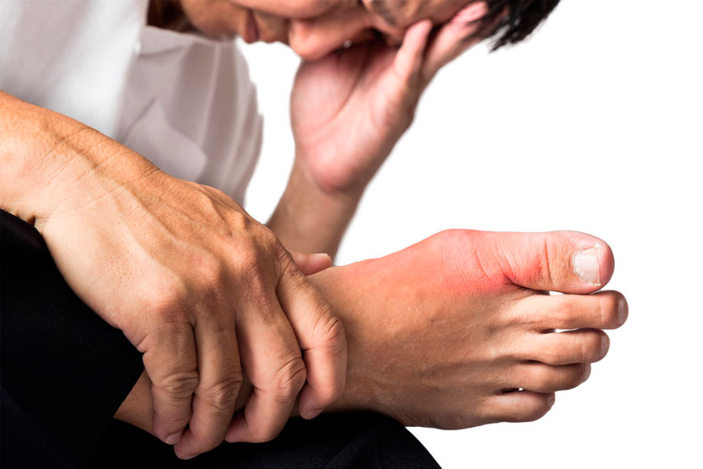
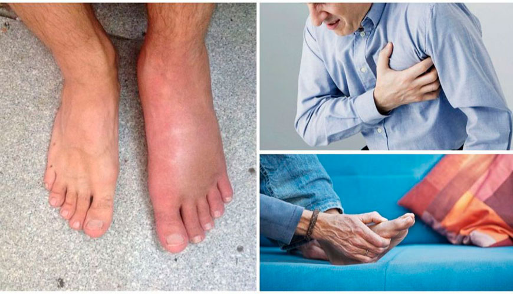
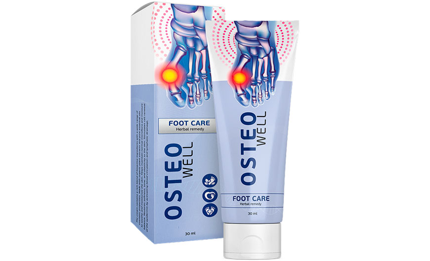
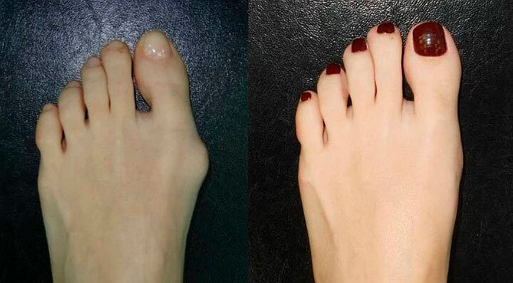

Как часто вы просыпаетесь ночью от боли в суставе? Сначала она кажется умеренной, но постепенно нарастает до ощущения, будто связки рвутся на части. Именно так проявляет себя подагра – воспаление суставов, вызванное повышением уровня мочевой кислоты в организме. Как не оказаться в зоне риска и вылечить подагру?

Подагра чаще встречается у мужчин в относительно молодом возрасте – в 40-50 лет. Но в последнее время подагрой стали болеть и женщины – как правило, после менопаузы. Последствия этого заболевания могут быть самыми тяжелыми – от поражения почек до инфаркта.
Избыток мочевой кислоты в крови может привести к отложению ее кристаллов вокруг ткани сустава. Результатом становится воспаление, сильная боль, а также припухлость – чаще всего в большом пальце ноги.
Мочевая кислота вырабатывается в печени из пурина и не выводится полностью из организма. ⅔ людей даже не подозревают о проблеме, так как высокий уровень мочевой кислоты в крови не дает о себе знать, пока не начнется воспалительный процесс.
Высокий уровень мочевой кислоты – признаки
- боль в большом пальце ноги
- интенсивная боль и воспаление суставов
- сложность при мочеиспускании
- нестабильный пульс
- боль в коленях
- боль в почках
- утомление
- жесткие образования вокруг суставов
Признаки и симптомы подагры почти всегда возникают внезапно, чаще всего ночью. Они включают:
- Боль в суставах. Начинается все с воспаления сустава на большом пальце ноги, щиколотках, коленях, локтевых суставах, запястье или пальцах.
- Затяжной дискомфорт. Суставы становятся отечными, теплыми и красными.
- Ограничение движений. Когда подагра прогрессирует, движение вызывает сильную боль.
Период острой подагры длится от 2 до 10 дней и повторяется черезе 2-3 месяца. Если не лечить болезнь, подагрические атаки становятся тяжелыми, поражают сразу несколько суставов и происходят все чаще и чаще. Воспаление вызывает не только деформацию суставов, но и становится причиной почечной недостаточности, сердечно-сосудистых заболеваний, метаболических расстройств, сахарного диабета и эректильной дисфункции у мужчин.

Профилактика и лечение подагры
Обычно для профилактики подагры врачи назначают диету. В первую очередь в рационе необходимо уменьшить количество пищи, при переваривании которой образуется большое количество мочевой кислоты. Но людям с травмами суставов, лишним весом, вредными привычками, малоподвижным образом жизни и генетически предрасположенным – диета не поможет. Наличие характерных кристаллических уратов в суставной жидкости и тофусов рано или поздно вызовет острый приступ подагры. Поэтому необходимо медикаментозное воздействие.
Препараты для лечения острых приступов подагры не предотвращают будущие приступы и не снижают уровень мочевой кислоты, а антибиотики и стероиды могут стать причиной сердечной и почечной недостаточности.
Для предотвращения острой подагры, а также осложнений после приступов, немецкие ученые создали нестероидный крем, способный блокировать производство мочевой кислоты и восстанавливать суставы, пораженные подагрой.
Исследование показало, что крем Osteowell эффективен как при начальных признаках, так и при хронической подагре. Крем снимает острую боль, отеки и покраснения в течение часа, не давая возникать повторным приступам. Больные, которые пользовались кремом в течение 14 дней, отметили отсутствие повторных кризов.
Что касается лабораторных исследований, то на 2 неделе использования баланс мочевой кислоты приближается к норме. Что говорит о снижении количества образованной печенью мочевой кислоты и выведение её почками.

Крем Osteowell избирательно действует на ксантиноксидазу – фермент, который участвует в формировании мочевой кислоты. Благодаря этому поддерживается ее нормальный уровень. Кроме того, крем помогает выводить из организма соли.
После курсового применения у больных снижается уровень мочевой кислоты в крови, уменьшается выраженность суставного синдрома, улучшаются показатели функции почек и иммунологические характеристики, поскольку происходит блокирование канальцевой реабсорбции. Лечение кремом Osteowell сводит к минимуму риск возникновения подагрических приступов.

В 80% случаев, при излишках мочевой кислоты, сначала поражается сустав первого пальца ноги. Подагра – системное заболевание, и со временем, кроме большого пальца, она распространяется и на суставы пальцев, запястья, локтей, коленей и голеностопа.
Как часто вы испытываете неприятные и болезненные ощущения в области суставов? Вам стало сложно подобрать удобную обувь? Чувствуете ограничение движений? Не откладывайте лечение и не давайте прогрессировать болезни.